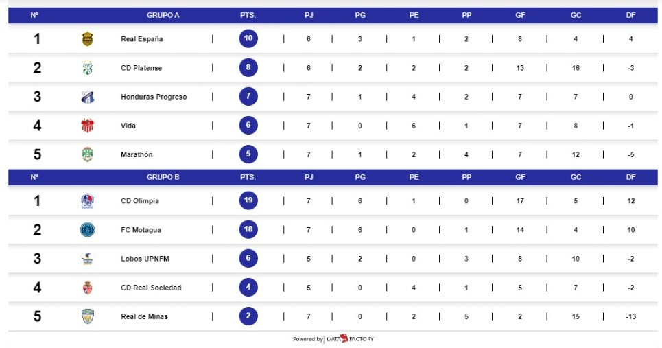
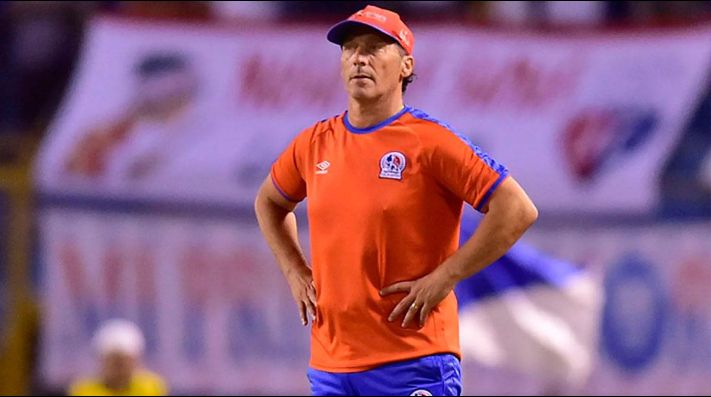

¡¡Liga Nacional!! El Real España y el Olimpia liderán sus respectivos grupos.

Pedro Troglio se enfurece con los que dicen que el Olimpia recibe ayudas
El suramericano además recordó a sus colegas que para ganar los partidos hay que, al menos, crear ocasiones de gol.

El director técnico del Club Olimpia Deportivo, Pedro Troglio, dio declaraciones a la prensa tras su triunfo ante Real de Minas por marcador de 3-0 y volvió a defenderse de aquellos que acusan que su equipo recibe ayudas."Contento porque se había complicado el primer tiempo, nos sorprendieron con tres volantes de contención y lo veníamos viendo siendo un equipo más abierto y largo pero metieron mucha gente atrás y nos complicaron", indicó. No obstante, al hacer cambios en su esquema para la segunda mitad llegó el primer gol que les dio más claridad y le abrió "los caminos" para estar con mayor tranquilidad en el Marcelo Tinoco."Nosotros sabemos que más allá de no estar finos en el primer tiempo, en algún momento llega el gol que abre el partido. A veces los partidos se complican y eso pasa en todo el mundo", recordó Troglio.